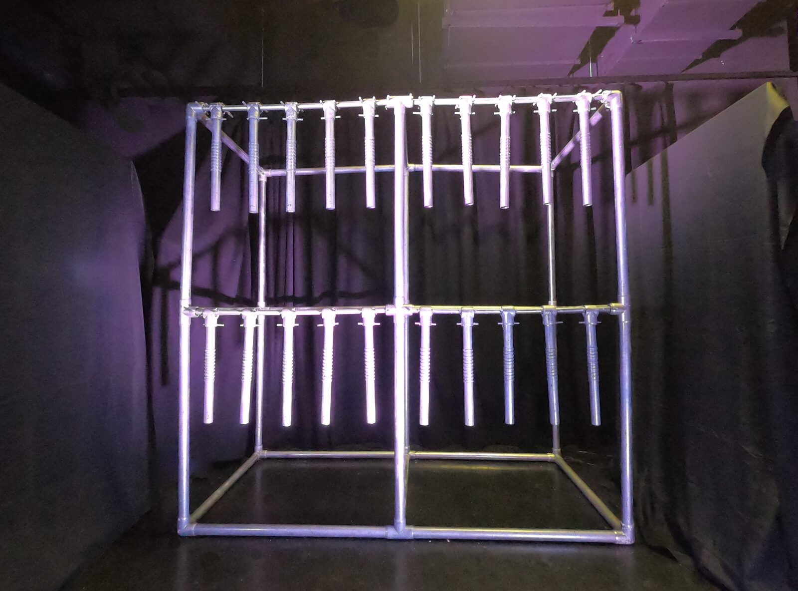
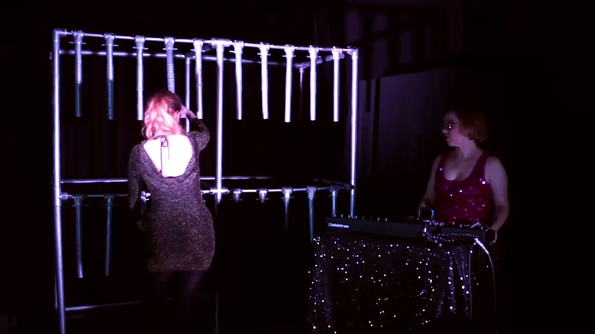

Chaos Bells
Project Description
Chaos Bells is a very large (2 metres wide and tall) instrument, shown in Figure 1, is designed with both artistic and analytical goals in mind: it is a probe into the exploration of instrument size on performance, while also being a vehicle for Lia Mice’s performance practice.
Chaos Bells features 20 gesturally performed pendulums. Chaos Bells' unique sound design in which bell sounds can drone and become chaotic is how it gained its name. Striking the instrument results in a staccato (short) tone, and tilting the pendulum/s results in a drone (sustained tone). The timbral quality of the drone corresponds to the pendulum tilt: somewhere between 45 and 90 degrees on each pendulum produces an unstable system where the drone grows over time and eventually becomes chaotic and distorted as it is clipped by the digital system, finally disintegrating into broadband noise with no clear fundamental tone.
Despite its large size, Chaos Bells is also performable with micro-gestures that have the capability to change the overall sonic output of the instrument, a feature influenced through research I conducted in which I interviewed performers of large acoustic instruments. to understand their favourite characteristics of their instruments.
Chaos Bells is created from PVC piping and features 20 embedded analog accelerometers connected to 4 Bela minis that run a Karplus-Strong synthesis algorithm on Pure Data.
Chaos Bells is unique in both physical aesthetics and sound design. The instrument has a growing list of artists adopting it to create original performances. As a technology probe exploring the impact of instrument design choices on music performance, this instrument has led to findings elucidating the impact of instrument size and tonal layout on music composition and performance.
Type of submission
New NIME
Requirements
Chaos Bells will be performed by the designer.
The performance will be video and audio recorded in advance of NIME using the author’s equipment listed below.
Chaos Bells instrument
Mixing desk
3 video cameras
PCM-100 audio recording device (to capture mixing desk audio)
PA or speakers
Macbook Pro with Premiere Pro (editing software)
Program Notes
Chaos Bells is a new very large (2 metres wide and tall) digital musical instrument. Chaos Bells features 20 performable pendulums that can swing up to 90 degrees forwards or backwards. Each pendulum has a textural pattern of raised rings inspired by the Latin-American güiro.
Chaos Bells' unique sound design in which bell sounds can drone and become chaotic is how it gained its name. The lower register tones feature a clear fundamental frequency and sound like a synthesised electric guitar, meanwhile the higher register tones contain more inharmonic partials for a bell-like quality. Striking the instrument results in a staccato (short) tone, and tilting the pendulum/s results in a drone (sustained tone). The timbral quality of the drone corresponds to the pendulum tilt: somewhere between 45 and 90 degrees on each pendulum produces an unstable system where the drone grows over time and eventually becomes chaotic and distorted as it is clipped by the digital system, finally disintegrating into broadband noise with no clear fundamental tone. A growing list of artists (to date, 12 artists) have created performances with Chaos Bells.
Media


Chaos Bells is a new very large (2 metres wide and tall) digital musical instrument with 20 performable pendulums.

▶Improvised performance by Blue Loop performing Chaos Bells, and Lia Mice performing Elektron Digitone and Elektron Rytm.
Ethics Statement
The materials for building Chaos Bells were purchased from the first author’s research budget, funded by EPSRC under the grant EP/L01632X/1 (Centre for Doctoral Training in Media and Arts Technology). Chaos Bells is made of PVC piping that is reused with every iteration of the instrument. Where possible recycled piping and components have been used.
Acknowledgements
This research is supported by EPSRC under the grant EP/L01632X/1 (Centre for Doctoral Training in Media and Arts Technology) and by the Royal Academy of Engineering under the Research Chairs and Senior Research Fellowships scheme.